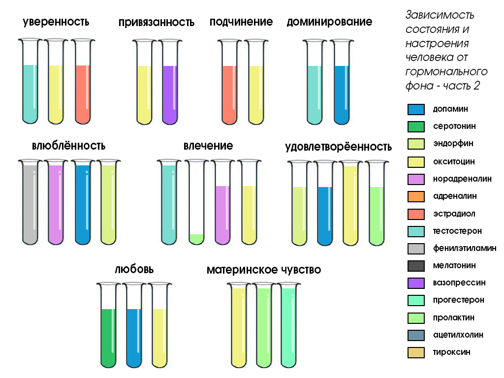

ДЗ: Нарисовать объект, при наведеннии и нажатии на определенные зоны которого выполняется переход к страницам с соответствующими пояснениями этих зон. При посещении этих зон сами зоны будут менять цвет.
Чувства и гормоны
Источник 1
Источник 2
Отношения между людьми
